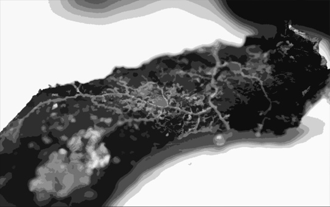

Слизь
Общее понятие
Чёрная слизь - одно из наиболее часто встречаемых последствий Самосбора.
Общие сведения
Слизь представляет из себя липкую жидкость средней вязкости. Очень едкая, способна разъедать даже некоторые виды гермодверей. Не разъедает только бетон и цинк.При попадании в живой организм слизь молниеносно влияет на клетки, они мутируют и начинают бесконтрольно делиться.
Слизь можно сжечь, после чего остаётся порошковый осадок, который по свойствам схож с оружейным порохом. Ликвидаторы удаляют небольшие пораженные поверхности с помощью грабель и вёдер, большие лужи требуют огнеметов.
Влияние на человека
Стадия первая, стартовая. время заражения прежде всего организма пытается отторгнуть слизь, в связи с этим у пораженного слизь может выходить в разных количествах через естественные отверстия, но мутация уже запущена, и человека не спасти.
Стадия вторая, подготовительная. Сознание человека меняется, высшие мозговые функции постепенно отключаются, а пострадавший претерпевает адскую боль во время начала мутаций
Стадия третья, терминальная. Мутации завершены, пораженный зачастую перестает быть похожим на человека, как внешне, так и поведением. Пострадавший становится агрессивным ко всему живому, умело пользуясь мутировавшими частями тела и полученными способностями.